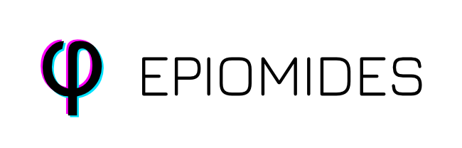

Valmei lab
Pra-GE-ATLAS
Home
Search
Expression - Genome
Expression - Transcriptome
Proteins
Splicing Events
Tools
Diamond Blastp
Networks
Heatmap
Primers Design
Orthology Inference
Regulation Browser
Related Db
Plantara | Late
Plantina | Late
PlantFUNCO | Available
Download